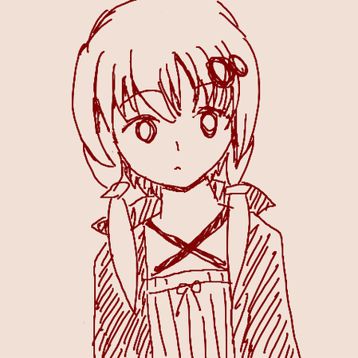

Profile
- Name
- Naoto Ikuno
- Age
- 18
- Editor
- Vim
- Twitter
- @le_panda_noir
- GitHub
- Naoto Ikuno
- Qiita
- le_panda_noir
- Homepage
- Panda noir
- Blog
- Panda noir
基本twitter常駐してます。UnitaryJSやTyping-beta(タイピングソフト)、Snowball(CSS圧縮ツール)開発しています。作ったものはホームページにおいてあります。
Skills
- JavaScript
- High
- CSS
- Middle
- HTML
- Middle
- Ruby, PHP, Python
- Low
- Haskell
- Low
- C, C++
- Learning Now...
(あくまで主観です。僕が書いたQiitaやブログの記事などが客観的な判断材料になると思います)
Icon

ウェブでこのアイコンを見かけたら僕です。Qiita、はてな、Twitter、GitHub、読書メーター、pixiv、ニコニコで使っています。他にもあった気がしますが覚えてません。